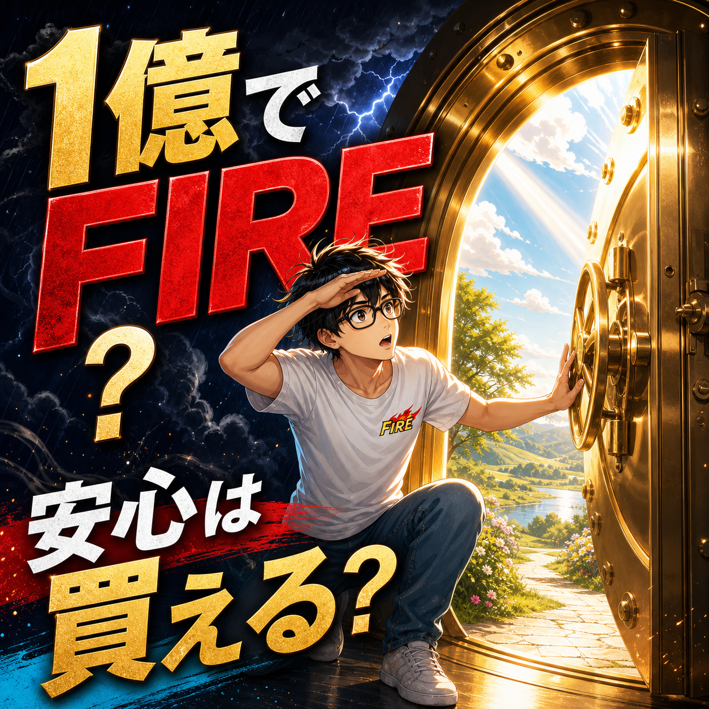

FIRE COLUMN
1億円あればFIREできる？安心できる人と不安が残る人の違い

.png) RELATED ARTICLE
FIREしても株価が気になった僕が、投資との距離を見直した話
FIREを目指して投資を始めたのに、毎日株価を確認して落ち着かない。資産が増えている日も、もっと増やせる銘柄があるのではないかと考えてしまう。
wakuwaku-fire-git.pages.dev ↗
RELATED ARTICLE
FIREしても株価が気になった僕が、投資との距離を見直した話
FIREを目指して投資を始めたのに、毎日株価を確認して落ち着かない。資産が増えている日も、もっと増やせる銘柄があるのではないかと考えてしまう。
wakuwaku-fire-git.pages.dev ↗
 COMMUNITY
FIREを本音で話せる場所
ワクワクFIRE道。FIREや自由な人生を目指す人が交流できるコミュニティ。
community.camp-fire.jp ↗
COMMUNITY
FIREを本音で話せる場所
ワクワクFIRE道。FIREや自由な人生を目指す人が交流できるコミュニティ。
community.camp-fire.jp ↗
1億円あればFIREできるのか。計算上の生活費だけでなく、資産が減ったときの心理、家族の安心、働き方の選択まで含めて、安心できる人と不安が残る人の違いを考えます。
まいど！ワクワクFIREのまるです。
「1億円あったら、さすがにFIREしても安心やろ？」
そう思うのは自然です。ゼロが一つ増えるだけで、未来への見え方は大きく変わる。けど、実際に資産が大きく動く経験をすると、金額と安心は同じものではないと分かってきます。
僕は30歳で会社を辞め、後年の公開記事では、2024年12月に資産が1億4000万円以上あった時期を振り返っています。その後、2026年2月には下落のピークで一億円弱減ったと書きました。どちらも現在の残高ではなく、それぞれの時点の出来事です。
この話を「1億円あれば大丈夫」という証明にも、「1億円でも絶対に無理」という脅しにもしたくない。安心できる人と不安が残る人は、金額だけで分かれるわけやないからです。
1億円を4％で計算すると、年間400万円になる
計算例として、資産の4％を年間生活費にあてる考え方を使うと、1億円×0.04で年間400万円、月にすると約33万円です。月30万円前後の暮らしなら、数字上は近く見えるかもしれません。
ただし、これは運用の成績や将来の物価を保証するものではありません。相場が下がる時期に取り崩す可能性、税金や社会保険、大きな医療費、家族の支出もあります。計算はスタート地点であって、ゴール判定ではないです。
家賃が低い人と高い人、独身と家族持ち、働く意思がある人とない人。1億円の意味は、それぞれの生活設計で変わります。「1億円」という響きに自分の暮らしを合わせるのではなく、自分の支出から逆算するほうが正確です。
資産が増えると、安心の基準も上がってしまう
資産が少ないときは、1000万円増えたら安心できそうに思う。5000万円になったら、次は1億円。1億円を超えたら、過去最高額へ戻したくなる。人間の感覚は、なかなか素直に「もう十分」とは言ってくれません。
僕も資産が増えれば不安が終わると思っていました。でも、1億4000万円以上まで行った後に減ると、「まだこれだけある」より「最高値からこれだけ減った」が頭を占領する。ぶっちゃけ、数字が増えたのに心が軽くならない場面もありました。
これは資産運用の成否とは別の、基準の問題です。安心の基準を資産の最高値だけに置くと、どれだけ増えても追いかけ続けることになる。
2026年2月の下落で、家族の安心を考え直した
2026年2月、仮想通貨の下落で、僕の資産は2024年12月のピークから一億円弱減りました。妻の不安と子どもの存在を受け、レバレッジだけでなく現物もかなり売却したと書いています。
売った直後に価格が戻り、判断としては悔しさも残りました。長く相場を見てきた自分のルールを曲げた感覚もあった。でも、家族に不安を負わせたまま「これは長期投資やから」と押し通すこともできなかった。
1億円あれば何でも耐えられるわけではない。家族と暮らすなら、資産の期待リターンだけでなく、同じ家で生活する人が眠れるかどうかも設計に入る。ここを無視して金額だけを見ると、資産が家族を守る道具から、家族を不安にする原因へ変わってしまうことがあります。
安心できる人は、金額以外にも切り札を持っている
1億円で安心しやすい人は、単に資産額が大きいだけではありません。生活費を把握している。大きな支出を別に見ている。相場が下がった時に働く選択肢がある。家族とリスクの話ができる。こうした切り札が複数ある。
逆に、1億円を全部値動きの大きな資産へ置き、毎月の生活費も相場の上昇だけに頼るなら、金額が大きくても不安は残ります。資産を守る部分と増やす部分をどう分けるかは、家庭の状況に応じて考える必要があります。
僕は後年になって、現金にも役割があると考え直しました。増えないからダメなのではなく、下落時に生活を守る役割がある。切り札を常に持て、という自分の考え方にもつながっています。
1億円でFIREするなら、支出の上限を先に決める
資産額から生活費を決めるのではなく、生活費から必要資産を考えます。月30万円なら年間360万円。月40万円なら年間480万円。同じ1億円でも、毎年いくら使うかで資産のもち方は大きく変わる。
さらに、最低限の生活費と、家族旅行や趣味に使うお金を分ける。相場が悪いときに一時的に調整できる支出と、削れない支出を決める。数字の計画は、平常時より下落時に役立つよう作っておきたいです。
働く可能性を残すと、FIREの圧力が下がる
1億円を持ったら、二度と働いてはいけない。そんなルールはありません。少し働く、文章を書く、発信する、家事育児を担う、誰かの役に立つ。収入になるかどうかに関係なく、活動があると生活の軸も増えます。
僕はFIRE後に会社員へ戻る気持ちは薄くなりましたが、必要なら働くこと自体を失敗とは考えていません。選べる状態を作ることがFIREの価値なら、働く選択肢を自分で捨てる必要もない。
1億円は安心の材料であって、安心そのものではない
1億円あればFIREできるかどうかは、生活費、家族、住まい、運用、働き方によって変わります。1億円は強い材料です。でも、その金額が不安を完全に消してくれるわけではありません。
資産を増やす。使う。守る。人とつながる。必要なら働く。安心を一つの残高に集中させず、複数の切り札へ分散する。僕は大きな増減を経験して、ようやくその意味が腹に落ちてきました。
「1億円あれば大丈夫か？」と迷ったら、残高だけで答えを出さないこと。1億円でどんな一日を守りたいのか。その一日を守るために、資産以外に何を持っているのか。そこまで考えて、初めて自分なりのFIREが見えてくるんやと思います。